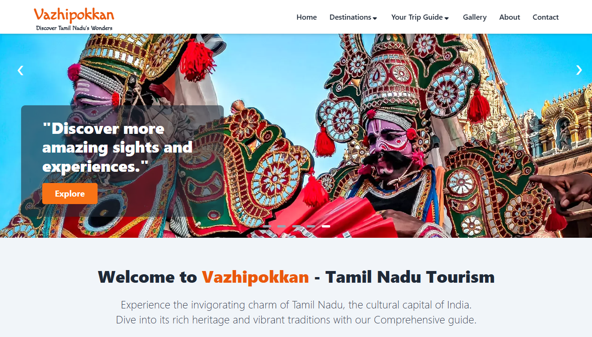

Front-End Developer Expertise in SEO
I’m a frontend developer focused on creating interactive web applications using React.
I
integrate SEO best practices to enhance discoverability and accessibility. With a strong understanding
of
React and SEO, I aim to build visually appealing, high-performance websites that provide both excellent
user
experiences and visibility on search engines.
Skills
Front-End Technologies: HTML5, CSS3, SCSS, JavaScript, Eslint, Vite, Webpack, Git.
UI Frameworks/Libraries: React.js, Tailwind CSS, Bootstrap, styled-components.
SEO/SEO Tools: Technical SEO, ON page/ OFF page SEO, Local SEO, Keyword Research &
Analysis, Google analytics, Google search Console, MOZ, SEMrush, Ahrefs.
Education
-
| B.E., Mechanical Engineering |
Sethu Institute of Technology (Sep 2022 - Jun 2024)
|
-
| HSC Computer Science |
TVS Higher Secondary School (Sep 2022 - Jun 2024)
|
Projects
Vazhipokkan-TravelGuide | React, Tailwind, react-helmet-async, SEO.
GitHub | Live

A comprehensive travel guide website for Tamil Nadu, showcasing top attractions, travel details, and interactive features. Built with React and optimized for performance and SEO
- Designed a detailed, responsive layout showcasing Tamil Nadu's tourist attractions.
- Implemented a gallery and images collection to inspire and guide travelers.
- Optimized for SEO to improve search engine rankings